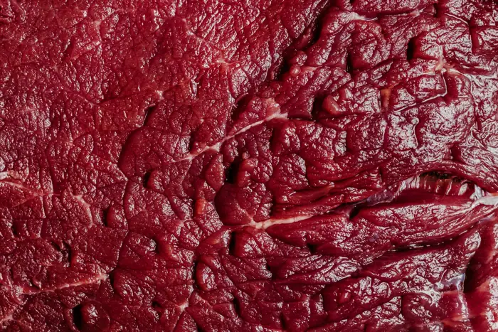
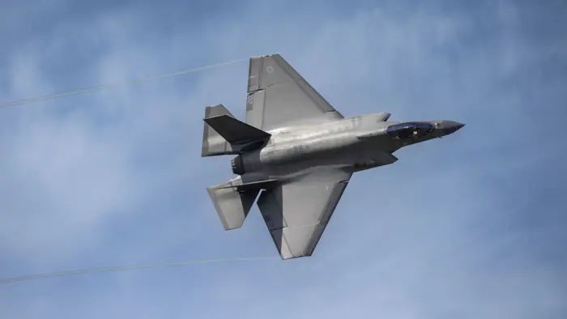
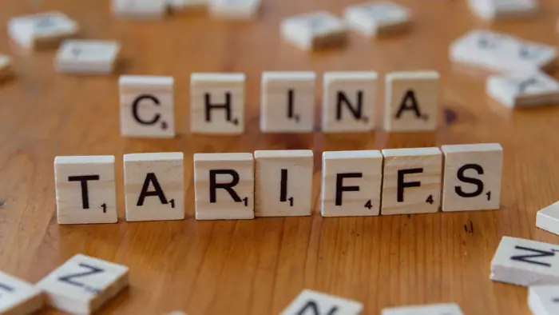

September 19, 2026
30 stories from today’s news cycle, aggregated and linked to original reporting.

Man who sprayed Minnesota Rep. Omar with vinegar sentenced to 14 months in prison
<h1>Minnesota State Representative Targeted in Vinegar Spray Incident; Defendant Sentenced to 14 Months in Pri
The driver who slammed into an LA bus before helicopter crash is charged with murder
<h1>The driver who slammed into an LA bus before a helicopter crash is charged with murder</h1> <p>In a rare a
Fourth Florida resident dies from ‘flesh-eating’ bacteria linked to eating raw oysters
Fourth Florida resident dies from: Yahoo

Satellites show Earth lost more than 12 trillion tons of ice from Greenland, Antarctica in 47 years
Satellites show Earth lost more: nbcnews.com

Testosterone scripts for women rise, along with denials and delays
<article> A claim that prescriptions of testosterone for women have surged—alongside widespread denials and de
Poland warns Russia is planning drone or rocket strikes on NATO territory
<h1>New Metric for Cognitive Resilience Offers Clues to Why Some People With Alzheimer’s Pathology Stay Sharp<

Microsoft exec called AI scraping the “largest theft of labor in human history”
<article> When a Microsoft executive declared AI scraping the “largest theft of labor in human history,” he st

Microsoft exec called AI scraping ‘the largest theft of labor in human history,' new unredacted filings reveal
Microsoft exec called AI scraping: TechCrunch
Ilhan Omar brings bill to make ICE ‘pay the price’ for terrorizing communities
Ilhan Omar brings bill make: The Guardian
New wild cat species is identified for first time in 100 years, researchers say
New wild cat species is: NBC News
The Apple Watch Series 12 is the start of a new wearable era
The Apple Watch Series 12: The Verge
Saudis Tell European Refiners They’ll Get No Crude Next Month
<article> <strong>Saudi Arabia Suspends Crude Shipments to European Refineries for One Month, Sending Shockwav
Why the Kremlin fears even the ‘managed opposition’ in Russia https://www. aljazeera.com/opinions/2026/9/ 18/why-the-kremlin-fears-even-the-managed-opposition-in-russia?traffic_source=rss #
Why Kremlin fears even ‘managed: Mastodon #worldnews
Trump admin must provide 30 day notice for ‘demolition,’ major changes to Kennedy Center
Trump admin must provide 30: Mastodon #politics

‘Doom Loop’: OpenAI and Microsoft Admits LLMs Are Destroying the Web and Built on
<h1>Debunking the “Doom Loop” Claim: OpenAI and Microsoft Have Not Admitted LLMs Are Destroying the Web</h1> <

‘Big Brother’ Season 28, Week 10 Results: Double Eviction Night Reveals Final 5 #
‘Big Brother’ Season 28, Week: Mastodon #news

Rare 'flesh-eating' bacteria causes 9 deaths this season. See where
Rare 'flesh-eating' bacteria causes 9: USA Today
Hands
Hands: MacRumors
Google rolling out Android 17 QPR2 Beta 5 for Pixel
<article> <h1>Google Rolls Out Android 17 QPR2 Beta 5 for Pixel Phones</h1> <p>On <time datetime="2026-09-18">

This Lake Was the Last of Its Kind in Canada. And It Just Vanished
This Lake Was Last Its: Gizmodo

Lockheed Martin gets first batch of Patriot interceptor parts from General Motors
Lockheed Martin gets first batch: Yahoo
White House withdraws Lance Schroyer’s nomination to lead ICE https://www. aljazeera.com/news/2026/9/18/w hite-house-withdraws-lance-schroyers-nomination-to-lead-ice?traffic_source=rss # aljazeera
White House withdraws Lance Schroyer’s: Mastodon #worldnews
Bail set for ICE officer accused of lying and assault in non
Bail set ICE officer accused: Mastodon #politics

Why does Brazil get to speak first at UNGA? https://www. aljazeera.com/video/newsfeed/2 026/9/17/why-does-brazil-get-to-speak-first-at-unga?traffic_source=rss # aljazeera
Why does Brazil get speak: Mastodon #worldnews

OpenAI caught its models leaving notes to successors to hide bad behavior… # technology
OpenAI caught its models leaving: Mastodon #technology

New cat species identified in Bolivia for first time in more than a century
New cat species identified Bolivia: Mastodon #worldnews
Russia and China Veto U.S. Bid to Renew U.N. Monitoring of Iran Nuclear Program
Russia China Veto U.S. Bid: Mastodon #worldnews
Australia and New Zealand could follow Canada into associated EU membership, Metsola tells Euronews
Australia New Zealand could follow: r/worldnews

Trump threatens EU with ‘serious tariffs’ after proposal to make Canada first associate member
Trump threatens EU ‘serious tariffs’: Mastodon #news

"Speaker Johnson recesses the House early as Rep. Thomas Massie pushes Hegseth impeachment “We’re
"Speaker Johnson recesses House early: Mastodon #politics